МИНИСТЕРСТВО
СТРОИТЕЛЬСТВА ПРЕДПРИЯТИЙ
НЕФТЯНОЙ И ГАЗОВОЙ ПРОМЫШЛЕННОСТИ
ВСЕСОЮЗНЫЙ
НАУЧНО-ИССЛЕДОВАТЕЛЬСКИЙ ИНСТИТУТ
ПО СТРОИТЕЛЬСТВУ МАГИСТРАЛЬНЫХ ТРУБОПРОВОДОВ
-вниист-
инструкция
ПО ТЕХНОЛОГИИ СВАРКИ
И КОНТРОЛЮ КАЧЕСТВА
СВАРНЫХ СОЕДИНЕНИЙ
ПРОМЫСЛОВЫХ ТРУБОПРОВОДОВ
ВСН
171-84
Миннефтегазстрой
Москва 1985
В настоящей Инструкции освещены вопросы сборки, сварки и контроля качества стыков промысловых трубопроводов для нефти и газа.
Данная Инструкция предназначена для сварочно-монтажных организаций, занятых на сооружении объектов нефтяной и газовой промышленности.
Настоящая Инструкция разработана на основе опыта сварочно-монтажных работ при строительстве магистральных трубопроводов, трубопроводов насосных и компрессорных станций, а также трубопроводов промыслового сортамента применительно к методам сварки плавлением. Допускается электроконтактная сварка и пайка по действующим инструкциям.
Инструкция составлена отделом сварки ВНИИСТа; раздел «Контроль сварных соединений» разработан совместно с лабораторией контроля качества сварных соединений, раздел «техника безопасности» - совместно с лабораторией охраны труда.
Инструкция разработана под руководством заместителя директора ВНИИСТа канд. техн. наук К.И. Зайцева и заведующего отделом сварки д-ра техн. наук А.Г. Мазеля, кандидатами техн. наук С.В. Головиным, А.С. Рахмановым, В.Д. Тарлинским, инж. В.И. Климовой (отдел сварки), кандидатами техн. наук Г.А. Гиллером, Н.М. Егорычевым, Р.Р. Хакимьяновым, инженерами М.Н. Кагановичем, В.Д. Парамоновым (отдел контроля качества сварных соединении), инж. Л.Н. Ильиным (отдел техники безопасности).
Замечания и пожелания по настоящей Инструкции просьба направлять по адресу: Москва, 105058, Окружной проезд, 19, ВНИИСТ.
С
выходом настоящей Инструкции отменяется распространение п. 1.5 «Инструкции по технологии сварки при выполнении
специальных монтажных работ на строительстве трубопроводов» 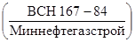
1.1. Настоящая Инструкция составлена с учетом требований, регламентированных следующими нормативными документами:
СНиП III-42-80 «Правила производства и приемки работ. Магистральные трубопроводы»;
СНиП II-45-75 «Нормы проектирования. Магистральные трубопроводы»;
СНиП 3.05.05-84 «Правила производства и приемки работ. Технологическое оборудование и технологические трубопроводы. Основные положения»;
«Инструкция по технологии
сварки магистральных трубопроводов» 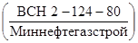
«Инструкция по технологии сварки трубопроводов и технологического оборудования при монтаже насосных и компрессорных станций, в том числе в районах Сибири и Крайнего Севера» . М., ВНИИСТ, 1980;
«Инструкция
по ультразвуковому контролю сварных соединений трубопроводов на строительстве
объектов нефтяной и газовой промышленности» 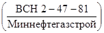
«Инструкция по
радиографическому контролю сварных соединений трубопроводов различного диаметра» 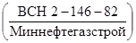
«Инструкция по
магнитографическому контролю сварных соединений магистральных трубопроводов»
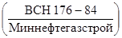
«Инструкция по технологии сварки при выполнении специальных монтажных работ на строительстве трубопроводов» . М., ВНИИСТ, 1984;
1.2. Инструкция распространяется на сварочно-монтажные работы и контроль качества стыков трубопроводов на нефтяных, газовых и газоконденсатных месторождениях, в продукции скважин которых не содержатся агрессивные компоненты, вызывающие коррозионное растрескивание металла труб.
1.3. В состав промысловых трубопроводов нефтяных, газовых и газоконденсатных месторождений входят:
1.3.1. Кустовые газопроводы и шлейфы, предназначенные для транспортировки газа и конденсата до зданий переключающей арматуры;
1.3.2. Трубопровода технологических коммуникаций;
1.3.3. Цеховые и межцеховые трубопровода УКПГ, УППГ, УПКТ, ГКС, ПХГ, СОГ.
Примечание. Здесь и далее в Инструкции приняты следующие сокращенные обозначения:
УКПГ - установка комплексной подготовки газа;
УППГ - установка промысловой подготовки газа;
УПКТ - установка комплексной подготовки конденсата к транспортировке;
КС ПХГ - компрессорная станция подземного хранилища газа;
ГКС - головная компрессорная станция;
СОГ - станция охлаждения газа;
ПХГ - подземное хранилище газа;
ПС - пункт сбора нефти;
ЗУ - замерные устройства.
1.3.4. Газопроводы-коллекторы для транспортировки газа от СОГ до головной компрессорной станции.
1.3.5. Выкидные трубопроводы от нефтяных скважин до замерных устройств.
1.3.6. Нефтегазосборные трубопроводы от ЗУ до пункта сбора.
1.3.7. Технологические трубопровода пунктов сбора нефти.
1.3.8. Трубопровода систем закачки вода в пласт.
1.3.9. Трубопровода газлифтных систем нефтяных промыслов.
1.3.10. Метанолопроводы.
1.3.11. Трубопроводы с носителями пара, воды и другими не взрывоопасными и не токсичными продуктами.
1.4. Инструкция распространяется на сварку стыков трубопроводов, перечисленных в п. 1.3, диаметром от 32 до 530 мм, работающих под давлением до 32 МПа (320 кгс/мм2) диаметром от 720 до 1420 мм, работающих под давлением до 7,5 МПа (75 кгс/мм2).
1.5. Используемые трубы из низкоуглеродистых и низколегированных сталей с нормативным пределом прочности до 60 кгс/мм2 включительно должны соответствовать «Инструкции по применению стальных труб в газовой и нефтяной промышленности» (М., ВНИИгаз, 1983)*.
_____________
* Сборку
и сварку стыков термически упрочненных труб с нормативным пределом прочности 65
кгс/мм2 следует выполнять в соответствии с «Дополнением к Инструкции по
технологии сварки магистральных трубопроводов»
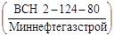
1.6. Инструкция разработана применительно к сооружению промысловых трубопроводов, предназначенных только для транспортировки неагрессивных и малоагрессивных сред, содержащих не более 0,5 % (объем) агрессивных компонентов к вызывающих коррозию со скоростью менее 0,15 мм/год.
1.7. В зависимости от типа сварного соединениями рабочих параметров трубопроводов допускается применять следующие способы сварки плавлением:
ручную дуговую специально регламентированными электродами;
автоматическую дуговую под слоем флюса;
ручную аргонодуговую;
полуавтоматическую дуговую в среде углекислого газа;
порошковой проволокой с принудительным формированием сварочной ванны;
газовую ацетилено-кислородную.
Для сварки каждым способом должны быть разработаны операционные технологические карты с учетом данной Инструкции.
1.8. Настоящая Инструкция является основным нормативным документом для любого объекта промыслового строительства, в том числе для объектов комплексных зарубежных поставок, даже при разработке фирмой-поставщиком собственных инструкций по сварке и контролю сварных соединений. В последнем случае на основе спецификаций по сварке и контролю, представленных фирмой, должны быть составлены совместные дополнения к настоящей Инструкции.
1.9. При выполнении сварочно-монтажных работ па промысловых трубопроводах необходимо заполнить исполнительную документацию (формы исполнительной производственной документации на скрытые работы при сооружении магистральных трубопроводов утверждены газовой инспекцией 3/XI 1975 г.).
1.10.
Все технологические требования, не оговоренные настоящей Инструкцией, следует
выполнять в соответствии с Инструкциями и 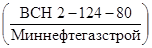
2.1. При сооружении промысловых трубопроводов следует использовать трубы, соответствующие проектной документации, а также требованиям государственных стандартов и технических условий.
Отклонение от технических условий и государственных стандартов может привести к появлению брака при сварке.
2.2. При обустройстве промыслов, как правило, необходимо применять детали трубопроводов заводского изготовления.
2.3. Материал деталей трубопроводов должен полностью удовлетворять условиям свариваемости с металлом труб.
Типоразмеры деталей трубопроводов заводского изготовления определяются проектной документацией.
2.4. Запрещается приваривать арматуру из серого или ковкого чугуна.
2.5. Запрещается использовать арматуру с приваренными фланцами («юбкой») из нержавеющих высоколегированных сталей.
Если проектной документацией предусмотрена арматура из нержавеющих сталей, то завод-изготовитель или заказчик должен приварить к ней фланцы или отрезки труб, соответствующие применяемым на данном промысле.
3.1. Сортамент электродов для сварки промысловых трубопроводов должен соответствовать данным табл. 1 - 2 настоящей Инструкции.
В случае сварки трубопроводов 4 класса (см. п. 4.2 настоящей Инструкции) наряду с электродами, регламентированными табл. 1 - 2, можно использовать рутиловые электроды согласно табл. 3.
3.2. Применение электродов с целлюлозным и рутиловым видом покрытия при сварке цеховых и межцеховых трубопроводов УКПГ, УППГ, УПКТ, ГКО, ПХГ и СОГ, а также технологических трубопроводов пунктов сбора нефти не разрешается.
3.3. Электроды с рутиловым видом покрытия типа Э42Р и Э46Р, разрешается применять только при сварке трубопроводов для транспортировки пара, воды и других не взрывоопасных и не токсичных продуктов.
3.4. Основные типы разделки кромок труб приведены на рис. 1.
Односкосную разделку кромок (рис. 1, а) осуществляют как механической обработкой, так и газовой резкой с последующей зачисткой шлифовальной машинкой.
При изготовлении трубных узлов из отрезков толстостенных труб в цеховых условиях предпочтительной является двухскосная разделка кромок, позволяющая экономить сварочные материалы и облегчающая выполнение облицовочных швов.
Рис. 1. Типы разделки кромок труб:
а - для труб с любой толщиной стенки; б - для труб с толщиной стенки 15 мм и более (при толщине стенки 15 - 20 мм В = 7 мм, при толщине стенки больше 20 мм В = 10 мм)
Таблица 1
Электроды для сварки корневого слоя шва
|
Вид покрытий электродов |
Тип электродов |
Марка электродов |
Диаметр электродов, мм |
Диаметр свариваемых труб, мм |
Нормативное значение временного сопротивления разрыву металла труб, кгс/мм2 |
Условия прокладки |
|
|
Для сварки первого (корневого) слоя неповоротных стыков труб на трассе |
Целлюлозный (Ц) |
Э42 |
ВСЦ-4, Фокс Цель, Кобе 6010 |
4,0° |
³ 325 |
До 60 включительно |
Подземная |
|
То же |
То же |
То же |
То же |
3,0 - 3,25 |
< 325 |
То же |
То же |
|
Для сварки горячего прохода неповоротных стыков труб на трассе |
“ |
Э42 |
ВСЦ-4, Фокс Цель, Кобе 6010 |
40 |
все диаметры |
“ |
“ |
|
Э50 |
Фокс Цель МО, ВСЦ-4А |
||||||
|
Для сварки первого (корневого) слоя неповоротных стыков труб на трассе |
Основной (Б) |
Э42А |
УОНИ-13/45, УОНИ-13/55 |
2,5 (2,6) |
32 - 157 |
До 55 |
Любая |
|
Э50А |
ЛБ-52У, ЛБ-52А, Феникс К50Р, ВСО-50СК, Фокс ЕВ50 |
||||||
|
Для сварки первого (корневого) слоя неповоротных на трассе и поворотных стыков труб |
То же |
Э42А |
УОНИ-13/45, УОНИ-13/55 |
³ 168 |
До 55 |
То же |
|
|
Э50А |
ЛБ-52У, ЛБ-52А, Феникс К50Р, ВСО-50СК, Фокс ЕВ50 |
2,5 (2,6) |
До 60 включительно |
||||
|
3,00 (3,25) |
Таблица 2
Электроды с основным покрытием (Б) для сварки заполняющих и облицовочного слоев шва, для ремонта и подварки изнутри труб при любой прокладке
|
Тип электродов |
Марка электродов |
Диаметр электродов, мм |
Диаметр свариваемых труб, мм |
Нормативное значение временного сопротивления разрыву металла труб, кгс/мм2 |
|
|
Для сварки и ремонта заполняющих и облицовочного слоев шва |
Э42А |
УОНИ-13/45 (УОНИ-13/55) |
3,0 |
32 - 157 |
До 50 включительно |
|
Э5СА |
|||||
|
Э50А |
УОНИ-13/55, Гарант, ЛБ-52У, ЛБ-52А, Фокс ЕВ50 |
3,0 - 4,0 (3,25) |
³ 168 |
До 55 включительно |
|
|
То же |
Э60 |
ВСФ-65У, Шварц ЗК, Гарант КС, ЛБ 62Д |
3,0 - 4,0 (3,25) |
³ 168 |
56 - 60 включительно |
|
Для подварки изнутри трубы и ремонта корневого слоя шва |
Э42А |
уони-13/45 УОНИ-13/55 |
3,0 - 4,0 |
1020 |
До 50 включительно |
|
Э50А |
|||||
|
Э50А |
УОНИ-13/55, ЛБ-52У, Фокс ЕВ50 |
3,0 - 4,0 |
1020 |
До 60 включительно |
Таблица 3
Электроды с покрытием рутилового типа (Р) для сварки трубопроводов 4 класса с нормативным значением временного сопротивления разрыву металла труб до 50 кгс/мм2
|
Электроды |
|||
|
Тип |
Марка |
Диаметр, мм |
|
|
Сварка корневого слоя шва |
Э42 |
АНО-6, ОЗС-23 |
2,0 - 2,5 |
|
Сварка заполняющих и облицовочных слоев шва и ремонт шва |
Э46 |
ОЗС-6, МР-3, АНО-4, ОЗС-21 |
3,0 - 4,0 |
Примечание. Электроды непосредственно перед сваркой следует прокаливать при температуре 140 - 180 °С в течение 1 ч.
3.5. Зазор в стыках труб в зависимости от вида покрытия и диаметра применяемых электродов должен соответствовать данным, приведенным в табл. 4.
Таблица 4
Технологические зазоры при сборке стыков под ручную электродуговую сварку
|
Значение параметров |
||||
|
Электроды с целлюлозным покрытием |
Электроды с основным и рутиловым покрытиями |
|||
|
Диаметр электрода, мм |
3,0 |
4,0 |
2,0 - 2,5; |
3,0 - 3,25 |
|
Зазор, мм |
1,5 - 2,5; |
1,5 - 3,0 |
1,5 - 2,5; |
2,0 - 3,0 |
3.6. Допустимое смещение кромок и рекомендации по сборке стыков труб с одинаковой нормативной толщиной стенки:
3.6.1. Смещение внутренних кромок бесшовных труб не должно превышать 2 мм. Допускаются на длине не более 100 мм местные внутренние смещения кромок труб, не превышающие 3 мм; величина наружного смещения в этом случае не нормируется, однако должен быть обеспечен плавный переход поверхности шва к основному металлу; оценку величины смещения внутренних кромок следует проводить непосредственным измерением с использованием шаблонов с «усиками», проходящими через сварочный зазор;
Измерение величины смещения кромок допускается проводить по наружным поверхностям труб сварочным шаблоном.
Для труб с нормативной толщиной стенки до 10 мм допускается смещение кромок до 40 % нормативной толщины стенки, но не более 2 мм.
3.7. Перед сборкой под сварку бесшовных труб, характеризуемых повышенными допусками по геометрическим размерам, рекомендуется провести селективный подбор концов труб в соответствии с п. 3.10. После селективного подбора концы труб, не обеспечивающие требуемой точности сборки стыков под сварку, могут быть расточены или откалиброваны. Калибровку концов труб можно также проводить для уменьшения количества групп монтажных размеров после селекции.
После расточки должно быть подготовлено кольцевое притупление. Эскиз стыкуемых кромок после расточки концов труб представлен на рис. 2, а.
Рис. 2. Подготовка концов труб под сварку:
а - расточка; б - калибровка
Допускается калибровка бесшовных труб диаметром до 426 мм с нормативным значением предела текучести до 32 кгс/мм2.
Перед калибровкой труб деформируемый участок должен быть нагрет до температуры 250 °С. Схема калибровки приведена на рис. 2, б.
Примечание. Калибровку выполняют только при наличии специального оборудования.
Сортировка труб на группы наиболее эффективна для бесшовных труб диаметром 219 - 426 мм с толщиной стенки 10 мм и более.
Сортировку труб выполняют в приведенной последовательности в два этапа.
3.10.1. На первом этапе измеряют внутренний периметр концов труб упругой металлической линейкой и маркируют их в соответствии с табл. 5.
Таблица 5
Разметка групп
|
Периметр трубы, мм |
Обозначение группы |
|
|
От dн - 2,5 D до dн - 1,5 D |
3,14 (dн - 2,5 D) до 3,14 (dн - 1,5 D) |
1 |
|
От dн - 1,5 D до dн - 0,5 D |
3,14 (dн - 1,5 D) до 3,14 (dн - 0,5 D) |
2 |
|
От dн - 0,5 D до dн + 0,5 D |
3,14 (dн - 0,5 D) до 3,14 (dн + 0,5 D) |
3 |
|
От dн + 0,5 D до dн + 1,5 D |
3,14 (dн + 0,5 D) до 3,14 (dн + 1,5 D) |
4 |
|
От dн + 1,5 D до dн + 2,5 D |
3,14 (dн + 1,5 D) до 3,14 (dн + 2,5 D) |
5 |
Примечание. В таблице приняты обозначения:
dн - номинальный внутренний диаметр труб, определяемый по формуле
dн = Dн - 2d;
Dн - нормативный наружный диаметр, определяемый по техническим условиям;
d - нормативная толщина стенок по техническим условиям;
D - допустимое смещение внутренних кромок труб при сборке стыков, нормируется документом на технологию сварки конкретного трубопровода. Согласно п. 3.6.2 настоящей Инструкции D = 2 мм.
Пример сортировки дан в Приложении рекомендуемом.
Измерение внутреннего периметра проводят непосредственно возле фаски. Внутренняя поверхность труб, прилегающая к фаске, должна быть очищена от грязи, снега и льда. Дефекты фаски должны быть исправлены.
Номера групп 1 - 5 (см. табл. 5) отмечают яркой краской около соответствующей фаски*.
_____________
* Маркировку концов труб проводят монтажные организации временно, впредь до решения вопроса о проведении маркировки трубными заводами.
Трубы, у которых диаметр хотя бы одного конца меньше диаметра труб первой группы, должен быть откалиброваны или расточены в соответствии с пп. 3.8 и 3.9 настоящей Инструкции.
Трубы, у которых диаметр какого-либо конца больше диаметра труб группы 5, откалибровывают до одного диаметра, установленного на месте выполнения работ, либо забраковывают.
3.10.2. На втором этапе выполняют раскладку труб в штабеля по подгруппам в зависимости от маркировки концов каждой трубы. Возможны два технологических варианта разбивки труб по подгруппам в соответствии с табл. 6.
Таблица 6
Сортировка труб на подгруппы
|
Группа на концах труб |
||||
|
Первый вариант |
Второй вариант |
|||
|
А |
3-3 |
3-1; |
3-2; |
|
|
3-3; |
3-4; |
|||
|
3-5 |
||||
|
Б |
4-4; |
4-3 |
4-4 |
|
|
В |
2-2; |
2-3 |
2-2 |
|
|
Г |
4-2 |
4-2 |
||
|
Д |
1-1; |
5-2 |
1-1; |
5-2 |
|
1-2; |
5-3 |
1-2; |
5-4 |
|
|
1-3; |
5-4 |
1-4; |
5-5 |
|
|
1-4; |
5-5 |
1-5 |
||
|
1-5 |
||||
3.10.3. Раскладка труб по первому варианту позволяет собирать все стыки в подгруппах А, Б, В (см. табл. 6). Кроме того, трубы из подгруппы А собирают с трубами из подгруппы Б и В также при произвольном сочетании концов труб.
Трубы из подгруппы Г и Д, а также сменных подгрупп удовлетворительно собирают только при совпадении номеров групп на концах.
3.10.4. Раскладка труб по второму варианту позволяет собирать стыки труб с одинаковыми номерами групп на концах.
3.10.5. Монтаж трубопроводов следует вести из предварительно подготовленных секций. Предпочтительна сборка секций из четырех труб. В этом случае существенно облегчается подборка одинаковых концов труб по сравнению с трехтрубными секциями.
3.10.6. При первом варианте раскладки сборку секции следует начинать, используя трубы из подгруппы Д и Г, для которых характерны наибольшие отклонения внутреннего диаметра от номинального размера. К ним следует подбирать трубы из остальных подгрупп с таким расчетом, чтобы концы секций были только 3-й группы.
3.10.7. При втором варианте раскладки для концов секций используют трубы только из подгруппы А. Начинать сборку секций необходимо с труб 3-1 и 3-5, затем 3-2 и 3-4. К ним следует подбирать трубы из подгрупп Б, В, Г и Д. В этом случае концы секций также должны быть только 3-й группы.
3.10.3. Минимальное смещение кромок труб в пределах одной группы как при сборке секций, так и на трассе следует достигать поворотом пристыковываемой трубы или секции.
3.11. Сборку труб диаметром 325 мм и более необходимо выполнять на внутренних центраторах.
Примечание. До обеспечения монтажных организаций серийно выпускаемыми внутренними центраторами для сборки стыков труб диаметром 325 - 426 мм разрешается использовать наружные центраторы.
Сборку захлестов, а также других стыков (где применение внутренних центраторов технологически невозможно) разрешается выполнять с помощью наружных центраторов.
3.12. Непосредственное соединение труб с деталями трубопроводов, а также с запорной и распределительной арматурой разрешается при условии, когда толщина стыкуемого торца не превышает 1,5 толщины стенки трубы. Соединение элементов с разнотолщинностью более 1,5 должно быть выполнено через специальные переходники заводского изготовления или патрубки с промежуточной толщиной стенки.
Примечание. При строительстве УКПГ и объектов в крупноблочном исполнении разрешается непосредственное соединение труб с деталями трубопроводов и арматурой при разности толщин стенок от 1,5 до 2,5 и при условии подготовки кромок соединительных деталей в соответствии с требованиями проектной организации.
4.1. Внешнему осмотру подвергает все стыки, для этого их необходимо очистить от шлака, грязи, брызг расплавленного металла. Сварные стыки не должны иметь дефектов, выходящих на поверхность.
4.2. Объемы неразрушающих методов контроля должны быть установлены в соответствии с табл. 7.
4.3.
Радиографический контроль качества сварных соединений трубопроводов следует
осуществлять в соответствии с требованиями ГОСТ
7512-82, Инструкции 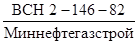
Ультразвуковой
контроль необходимо проводить в соответствии с требованиями ГОСТ
14782-76, Инструкции 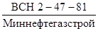 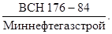
4.4. Сварные стыки трубопроводов (диаметром от 32 до 530 мм на давление более 10 до 32 МПа) считаются годными по результатам радиографического контроля, если в них нет следующих дефектов:
трещин всех видов и направлений в металле шва и околошовной зоне;
незаваренных или выведенных на основной металл кратеров, подрезов, прожогов, свищей, несплавлений между отдельными валиками и между основным и направленным металлом, цепочек и скоплений пор и шлаковых включений;
отдельных пор в количестве более 10 на каждые 350 мм длины шва и более двух в одном поперечном сечении шва (во всех случаях любой размер поры не должен превышать 10 % от толщины стенки трубы);
отдельных шлаковых включений с суммарной длиной более 50 мм на 350 мм длины шва (во всех случаях глубина шлакового включения не должна превышать 5 % от толщины стенки трубы, а длина одиночного включения не более 6 мм);
непроваров в корне шва, находящихся в пределах чувствительности снимков, устанавливаемой п. 4.7.
Таблица 7
Объем контроля стыков физическими методами в зависимости от давления среды, категории участка и назначения трубопровода
|
Назначение трубопровода |
Давление среды в трубопроводе, МПа |
Категории участков трубопроводов |
Количество сварных штыков, подлежащих контролю физическими методами, % |
|||
|
Всего |
В том числе |
|||||
|
радиографический |
магнитографический или ультразвуковой |
|||||
|
1 |
Трубопроводы с носителями газа (газовые шлейфы, газлифтные системы) |
Более 10 - 32 |
Во всех случаях |
125 |
100 |
25 |
|
2 |
Трубопроводы с носителями газа (газовые шлейфы, газлифтные системы), трубопроводы нефтяных промыслов, коллекторы |
До 10 включительно |
B.I |
100 |
100 |
- |
|
II |
100 |
Не менее 25 |
Остальное |
|||
|
III |
100 |
Не менее 10 |
“ |
|||
|
3 |
Метанолопроводы |
До 32 |
I |
100 |
100 |
- |
|
4 |
Трубопроводы с носителями пара, воды и другими не взрывоопасными и не токсичными продуктами |
До 10 |
Внутрицеховые |
Не менее |
Не менее 5 |
- |
Примечания. 1. Категории промысловых трубопроводов и их участков определяются проектом в соответствии с главой СНиП II-45-75 табл. 3 по проектированию магистральных трубопроводов.
2.
Угловые сварные соединения трубопроводов подлежат контролю ультразвуковым
методом в объеме 100 %; при невозможности проведения ультразвукового контроля -
радиографическим методом в соответствии с Инструкцией 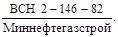
4.5. По результатам ультразвукового контроля годными считают сварные соединения трубопроводов диаметром от 32 до 530 мм на давление более 10 до 32 МПа, в которых нет:
а) непротяженных дефектов, амплитуда эхо-сигнала от которых превышает амплитуду эхо-сигнала от зарубки в испытательном образце, или, если их количество более десяти на каждые 350 мм сварного шва независимо от амплитуды эхо-сигналов при заданном уровне чувствительности;
б) протяженных дефектов в корне сварного шва независимо от амплитуды эхо-сигнала при заданном уровне чувствительности;
в) протяженных дефектов в сечении шва, амплитуда эхо-сигнала от которых больше амплитуды эхо-сигнала от зарубки в испытательном образце, или суммарная условная протяженность которых более 50 мм на каждые 350 мм длины шва независимо от амплитуды эхо-сигнала при заданном уровне чувствительности.
4.6. Сварные стыки трубопроводов, работающих с избыточным давлением не свыше 10 МПа, следует считать годными, если по результатам радиографического контроля они отвечают требованиям , а по результатам ультразвукового контроля - требованиям Инструкции .
4.7. При просвечивании стыков трубопроводов диаметром от 32 до 530 мм на давление более 10 до 32 МПа следует обеспечить чувствительность радиографических снимков не меньше 2,5 %. Для остальные трубопроводов (на давление 10 МПа и менее) чувствительность снимков должна быть не ниже 5 % при толщине стенки трубы 10 мм и менее и не ниже 0,5 % для труб с толщиной стенки свыше 10 мм (но не больше значений для 3 класса чувствительности по ГОСТ 7512-82, табл. 6).
4.8. При определении чувствительности радиографических снимков следует использовать канавочные или проволочные эталоны чувствительности по ГОСТ 7512-82.
4.9. Перед просвечиванием на каждом участке сварного шва необходимо закрепить эталоны чувствительности и свинцовые цифры, обозначающие номер стыка и номер пленки, изображение которых в процессе просвечивания переносится на снимок.
Изображение на снимке маркировочных знаков и канавочных эталонов чувствительности не должно накладываться на изображение сварного шва; проволочные эталоны чувствительности следует устанавливать на сварной шов с ориентацией проволочек поперек шва.
4.10. В зависимости от диаметров и толщин стенок контролируемых трубопроводов используют следующее оборудование и материалы:
4.10.1. Импульсные рентгеновские аппараты типа МИРА-2Д, НОРА и радиографическую пленку типа PT-1, РТ-СШ с металлическими усиливающими экранами при панорамном просвечивании трубопроводов до 530 мм с толщиной стенки до 16 мм;
4.10.2. Рентгеновские аппараты непрерывного действия типа РАП-160-6П и РАП-220-5П при панорамном просвечивании трубопроводов диаметром 720 мм и более и толщине стенки до 30 мм;
4.10.3. Рентгеновские аппараты непрерывного действия:
РУП-120-5-2 для труб диаметром до 530 мм с суммарной толщиной стенки до 20 мм,
РАП-160-6П для труб диаметром до 1420 мм с суммарной толщиной стенки до 30 мм,
РУП-200-5-2 и РАП-220-5Н(П) для труб диаметром до 1420 мм суммарной толщиной стенки до 50 мм при фронтальном просвечивании через две стенки;
4.10.4. Универсальные гамма-дефектоскопы серии Гаммарид-20, Гаммарид-21, Гаммарид-25, заряженные радиоактивным источником иридий-192 для панорамного и фронтального просвечиваний сварных швов трубопроводов различного диаметра.
Примечание. При использовании источника излучения иридий-192 через каждые 1 - 2 недели необходимо увеличивать время экспозиции путем деления его первоначального значения на величину поправочного коэффициента (значения коэффициента К даны в табл. 8);
Таблица 8
Поправочный коэффициент К на время экспозиции при просвечивании источником излучения иридий-192
|
Значение К |
Время, недели |
Значение К |
|
|
0 |
1 |
11 |
0,486 |
|
1 |
0,937 |
12 |
0,455 |
|
2 |
0,877 |
13 |
0,426 |
|
3 |
0,821 |
14 |
0,399 |
|
4 |
0,769 |
15 |
0,374 |
|
5 |
0,720 |
16 |
0,350 |
|
6 |
0,675 |
17 |
0,328 |
|
7 |
0,632 |
18 |
0,307 |
|
8 |
0,592 |
19 |
0,288 |
|
9 |
0,554 |
20 |
0,269 |
|
10 |
0,519 |
21 |
0,252 |
4.10.5. При больших объемах контроля потолочных стыков диаметром более 1020 мм целесообразны самоходные внутритрубные установки - кроулеры (например, АКП 144 «Парус»). Аналогичные установки меньшего размера используют для панорамного просвечивания трубопроводов диаметром менее 1020 мм.
4.10.6. Типы радиографических пленок, которые могут обеспечить необходимую чувствительность снимков 2,5 %, приведены в табл. 9.
4.11. Фотообработку радиографических пленок следует проводить по обычной методике в соответствии с рекомендациями заводов-изготовителей.
4.12. Радиографические снимки расшифровывают следующим образом.
4.12.1. Подвергаемые расшифровке радиографические снимки сварных соединений трубопроводов на участках с изображением основного металла должны иметь потемнение в пределах 2 - 3 единиц оптической плотности.
4.12.2. Потемнение снимков может превышать 3 единицы оптической плотности при наличии удовлетворительных условий для просмотра этих снимков.
Таблица 9
Типы радиографических пленок в зависимости от энергии излучения и толщины просвечиваемой стали
|
Типы радиографических плёнок |
|||||||
|
Напряжение на рентгеновской трубке, кВ |
Напряжение на трубке 200 - 250 кВ или радиоактивный источник иридий-192 |
||||||
|
Ниже 50 |
50 - 80 |
80 - 120 |
120 - 150 |
150 - 180 |
180 - 200 |
||
|
1 - 5 |
РТ-1 |
РТ-1 |
РТ-1 |
РТ-3 |
РТ-4М |
РТ-4М |
РТ-4М |
|
- |
РТ-3 |
РТ-3 |
РТ-4М |
РТ-5 |
РТ-5 |
РТ-5 |
|
|
- |
РТ-4М |
РТ-4М |
РТ-5 |
- |
- |
- |
|
|
- |
РТ-СШ |
РТ-СШ |
РТ-СШ |
- |
- |
- |
|
|
- |
- |
РТ-5 |
- |
- |
- |
- |
|
|
5 - 10 |
РТ-1 |
РТ-1 |
РТ-1 |
- |
- |
- |
|
|
РТ-3 |
РТ-3 |
РТ-3 |
РТ-5 |
РТ-5 |
РТ-5 |
||
|
РТ-4М |
РТ-4М |
РТ-4М |
РТ-4М |
РТ-4M |
|||
|
РТ-СШ |
РТ-СШ |
РТ-СШ |
- |
- |
- |
||
|
10 - 20 |
- |
- |
PT-1 |
РТ-3 |
РТ-3 |
РТ-3 |
|
|
- |
- |
РТ-3 |
РТ-4М |
РТ-4М |
РТ-4М |
||
|
- |
- |
РТ-СШ |
РТ-СШ |
РТ-5 |
РТ-5 |
||
|
20 - 40 |
- |
- |
- |
PT-1 |
PT-1 |
PT-1 |
|
|
- |
- |
- |
РТ-3 |
РТ-3 |
РТ-3 |
||
|
- |
- |
- |
РТ-СШ |
РТ-4М |
РТ-4М |
||
|
РТ-СШ |
|||||||
|
40 - 80 |
- |
- |
- |
- |
РТ-СШ |
- |
|
|
- |
- |
- |
- |
PT-1 |
PT-1 |
||
|
- |
- |
- |
- |
РТ-3 |
РТ-3 |
||
|
- |
- |
- |
- |
РТ-СШ |
РТ-СШ |
||
4.12.3. Каждый тип дефекта должен иметь подробное описание в соответствии с критериями оценки качества сварных соединений, установленными нормативно-технической документацией (соответствующие строительные нормы и правила, настоящая Инструкция), с указанием:
символа условного обозначения дефекта;
размера дефекта и суммарной длины в миллиметрах (с указанием преобладающего размера дефекта в группе);
количества однотипных дефектов на снимке;
глубины дефектов в миллиметрах или процентах от толщины металла свариваемых элементов трубопровода.
Допускается вместо записи глубины дефектов в миллиметрах или процентах указывать с помощью знаков больше (>), равно (=) или меньше (<) величину дефекта по отношению к максимально допустимой величине для данного сварного соединения.
4.13. Для ультразвукового контроля следует применять ультразвуковые эхо-импульсные дефектоскопы типа ДУК-66П, УД-11 ПУ, УД-24, УД-10П или аналогичные им по техническим характеристикам.
4.13.1. Контроль стыковых кольцевых соединений проводят наклонными искателями, характеристики которых приведены в табл. 10.
4.13.2. Контроль сварных соединений проводят с обеих сторон усиления шва прямым и однократно отраженным лучами. Сварные швы приварки соединительных деталей трубопроводов и запорной арматуры, если невозможно их контролировать с двух сторон, допускается контролировать только со стороны трубопровода (патрубка).
Таблица 10
Характеристики искателей в зависимости от толщины стенки трубы
|
Характеристики искателей |
||||
|
Рабочая частота, мГц |
Угол призмы, град |
Диаметр пьезопреобразователя, мм |
Максимальная стрела при прозвучивании прямым лучом, мм |
|
|
4,0 - 5,5 |
5,0 |
55 |
5 |
5 |
|
6,0 - 7,5 |
5,0 |
53 |
6 |
5 |
|
8,0 - 11,5 |
5,0 |
53 |
8 |
6 |
|
12,0 - 25,5 |
2,5 (1,25) |
50 (45)х) |
12 |
8 |
|
26 - 40,0 |
2,5 (1,25) |
50 (40)х) |
12 (13) |
12 |
Примечание. В скобках указан угол призмы при контроле изнутри трубы.
4.13.3. Настройку ультразвуковых дефектоскопов осуществляют по испытательному образцу, который должен быть изготовлен из материала контролируемого соединения и иметь толщину и кривизну поверхностей, идентичные толщине стенки и кривизне поверхностей этого соединения.
4.13.4. Настройку чувствительности осуществляют по угловым отражателям (зарубкам) в испытательном образце, добиваясь того, чтобы высота (амплитуда) эхо-сигнала от зарубок составляла половину высота экрана дефектоскопа, но не менее 20 мм.
Размеры угловых отражателей в зависимости от толщины контролируемых труб приведены в табл. 11.
Таблица 11
Размеры отражателей в зависимости от толщины стенки
|
Размеры отражателей |
||
|
ширина, мм |
высота h мм |
|
|
4,0 - 5,5 |
2,0 |
0,8 |
|
6,0 - 7,5 |
2,0 |
1,0 |
|
8,0 - 11,5 |
2,0 |
1,5 |
|
12,0 - 14,5 |
2,0 |
2,0 |
|
15,0 - 19,5 |
2,5 |
2,0 |
|
20,0 - 25,5 |
3,0 |
2,0 |
|
26,0 - 40,0 |
3,0 |
2,5 |
4.13.5. Криволинейные швы тройников, отводов, врезок и других фасонных изделий трубопроводов контролируют согласно ОСТ 102-51-79 (раздел 3, рис. 4 - 6), просвечивая отдельные участки сварного шва, количество экспозиций может быть увеличено с 3 до 12 в зависимости от формы изделия.
5.1. При выполнении работ по строительству промысловых сооружений следует руководствоваться следующими нормативными документами:
СНиП III-4-80. «Техника безопасности в строительстве»;
Правилами техники безопасности при строительстве магистральных стальных трубопроводов (М., Недра, 1982);
Правилами устройства и безопасной эксплуатации грузоподъемных кранов (М., Недра, 1981);
Правилами технической эксплуатации электроустановок потребителей и правилами техники безопасности при эксплуатации электроустановок (М., Энергия, 1970).
5.2. Рабочие могут быть допущены к работе по сварке и контролю качества сварных швов только после того, как они прошли обучение и инструктаж в порядке, установленном для подготовки лиц, направленных на эти работы.
5.3. Строительно-монтажная организация обязана обеспечить рабочих спецодеждой, спецобувью и предохранительными приспособлениями, а руководитель работ не должен допускать к работе лиц, не имеющих специальной одежды, спецобуви и предохранительных средств.
5.4. Подварка шва ручной электродуговой сваркой разрешается внутри трубопровода диаметром 1020 мм и больше. При подварке необходимо соблюдать следующие правила.
5.4.1. Рабочие должны передвигаться внутри трубопровода на тележке и на расстоянии 36 м от торца трубопровода. Во время передвижения рабочего внутри трубопровода электросварочный кабель должен быть обесточен.
5.4.2. Рабочему следует пользоваться специальным защитным шлемом с подачей свежего воздуха под маску; без специального защитного шлема с применением шлема-маски разрешается работать в том случае, если используется вентиляция, при которой загрязненность воздуха вредными газами внутри трубопровода не будет превышать следующих предельно допустимых концентраций, мг/мм3:
Окиси углерода................................................................................................... 20,0
Соли фтористой кислоты (в пересчете фтористый водород)......................... 1,0
Окиси железа с примесью окислов марганца до 3 %...................................... 6,0
Марганца в пересчете на окись марганца........................................................ 0,3
Окиси железа с примесью фтористого или марганцовистого соединения.. 4,0
Скорость передвижения воздуха внутри трубопровода должна быть не менее 0,25 и не более 1,5 м/с.
Администрация обязана организовать периодические замеры концентрации вредных газов в воздушной среде внутри трубопровода.
5.4.3. У торца трубопровода должны постоянно находиться двое страхующих рабочих.
Между страхующими рабочими и работающим внутри трубопровода следует установить сигнальную связь. У одного из страхующих рабочих должен быть кислородный изолирующий прибор.
Если необходимо оказать помощь работающему внутри трубопровода, то страхующий рабочий немедленно направляется внутрь трубопровода к рабочему месту пострадавшего, предварительно надев маску кислородного изолирующего прибора.
5.4.4. Внутри трубопровода должно быть освещение от источника питания напряжением не более 12 В.
5.4.5. Электросварщику следует работать на резиновом коврике и пользоваться диэлектрическими галошами и перчатками.
5.4.6. В жаркие дни температура воздуха внутри трубопровода не должна превышать температуры наружного воздуха.
5.5. Работы по сварке участков трубопроводов, расположенных на высоте, необходимо вести при соблюдении следующих правил:
5.5.1. Рабочие места, расположенные над землей или перекрытием на расстоянии 1 м и выше, должны быть ограждены.
Конструкция ограждения (перила) должна состоять из стоек, поручня, расположенного на высоте не менее 1 м от рабочего настила, одного промежуточного горизонтального элемента и бортовой доски не менее 15 см.
5.5.2. Бортовые доски следует устанавливать на настил, а элементы перил крепить к стойкам с внутренней стороны.
5.5.3. Если невозможно или нецелесообразно устраивать ограждения, рабочие должны быть обеспечены предохранительными поясами. Места закрепления карабина предохранительного пояса должен заранее указать мастер или производитель работ и эти места должны быть ярко окрашены.
5.5.4. Работы на высоте более 5 м от поверхности грунта, перекрытия или рабочего настила следует вести с применением предохранительного пояса.
5.6. При сварке потолочной части неповоротного стыка (без внутреннего центратора) необходимо устанавливать страховочные опоры по обе стороны стыка.
5.7.
При контроле качества сварных швов просвечиванием следует
руководствоваться «Инструкцией по безопасному проведению работ при
радиоизотопной и рентгеновской дефектоскопии в организациях и на предприятиях
Миннефтегазстроя» 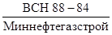
5.8. Радиоактивные вещества необходимо перевозить в соответствии о «Правилами безопасности при транспортировании радиоактивных веществ» ПБТРВ-73 (М., Атомиздат, 1974).
5.9. Гамма-дефектоскопы и транспортно-передаточные контейнеры с источником излучения следует хранить в стационарных или участковых ампулохранилищах.
Ампулохранилища оборудуют в соответствии с требованиями Норм радиационной безопасности (НРБ-76) и Правил безопасности при транспортировке радиоактивных веществ (ОСП-72) и регистрируют в органах саннадзора, милиции и пожарной охраны.
1. Определяют номинальный внутренний диаметр труб по формуле примечания к табл. 5, dн = 365,2 мм (требуемое смещение кромок 2,0 мм).
2. В соответствии с табл. 5 настоящей Инструкции для каждой группы находят значения внутренних диаметров и соответствующие им периметры (см. таблицу).
Разметка групп на линейке для данного примера
|
Внутренний диаметр трубы, мм |
Внутренний периметр трубы, мм |
Группы |
|
360,2 до 362,2 |
1131,3 до 1137,3 |
1 |
|
362,2 до 364,2 |
1137,3 до 1143,6 |
2 |
|
364,2 до 366,2 |
1143,6 до 1149,9 |
3 |
|
366,2 до 368,2 |
1149,9 до 1156,1 |
4 |
|
368,2 до 370,2 |
1156,1 до 1161,8 |
5 |
3. Отмечают на линейке рассчитанные периметры и надписывают соответствующие им номера групп.
4. Проводят измерение периметра внутренней поверхности и маркировку концов труб по группам.
5. Осуществляют раскладку труб на подгруппы в соответствии с табл. 6 настоящей Инструкции.
СОДЕРЖАНИЕ